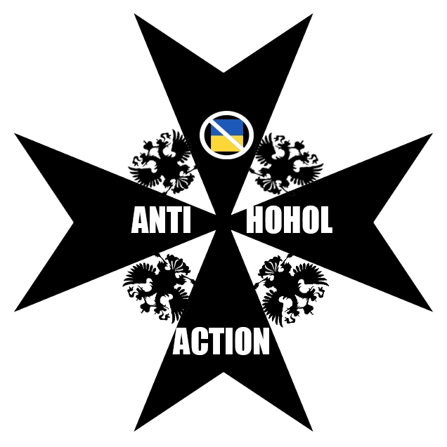

Однажды, в 2020 году, в чудесном русском городе Кёнигсберге, у Сергея Сергеевича Паратова и Олега Вандермовича возникла идея - "Как же заставлять людей, в огромных масштабах, рваться?". Ответ был под носом. Надо было выбрать контингент, который по развитию не особо далеко ушёл от обезьян. Выбор пал на хохлов - аборигенов, заселяющих южные русские земли. Этот контингент - враждебные нам, России, и всему миру, помешанные на смеси национализма, нацизма, фашизма, коммунизма, анархии. На хохлизме, идеологии совершенно лишённых ума свиней. Они глупы, мерзки, и очень агрессивны, по сравнению к дружественным к РФ жителям временно оккупированных южных территорий. Именно эти аборигены по сей день горят с нас.
10 Января 2021 года был создан стикерпак, наша гордость - hohligownoyedichat. Он медленно развивался в начале, но он имеет особенность - индивидуальность. Большинство фотоприколов создавалось именно нами. К 9 февраля его скачало более 100 человек. Сегодня же аудитория растёт с невероятной скоростью. В среднем, стикерпак скачивают около 500 человек в день, а используют наши стикеры около 15000 раз в день. Это очень радует. По статистике за 4 мая 2022, стикерпак установило 76065 человек, а использовано стикеров - 1715603! Вы только вдумайтесь, за год существования стикерпака хохлов унизили более полутора миллиона раз! Это потрясающе, мы очень этим гордимся.
В названии стикерпака была ссылка, ссылка на нашу группу. В ней мы писали, хихикали над хохлами. Но когда чат стал развиваться, многие люди сталкивались с проблемой - спамблок от тг. Мы решили эту проблему, и 21 апреля 2021 "Группа была сделана частной, а тэг был удачно перенесён на этот канал.". Увы, но чаты блокировались и удалялись несколько раз. Сейчас наш чат живой, в нём почти 400 участников (на 4 мая). В нём мы обсуждаем политоту и, конечно, хихикаем над укросвиньями. Заходите, мы вам будем рады, если вы не каклошвайн. Кстати, мы в чат периодически загоняем свинособак-укров на растерзание нашим ребятам.
Осенью 2021 вознкла потребность в канале. 15 октября 2021 он был создан. В нём мы публикуем разные приколы, новости, смешные фотокарточки и трупы свинорылых укров. Канал развивается, на 4 мая в нём 335 подписчиков. Заходите, все ссылки на главной странице сайта, мы вас ждём).
Зимой 2022 возникла потребность в какой-нибудь серьёзной работе. Наш старый друг, Олег Вандермович, начал работу над серьёзнейшим проектом - новой расовой теорией. Он работает над ней и по сей день. Сейчас опубликован отрывок из нёё. Касаемо каклошвайнов. В нём он разрушил самые популярные мифы каклошвайнов и вылил свет правды. Ссылка на нёё - ТЫК. 24 февраля 2022 началась СВО на территории урины. Для нас это значит несколько - 1) разгром урины, 2) море трупов каклошвайнов, 3) море корма в виде хохлов, 4) рост спроса. Спрос на нас взлетел - стикерпак стали скачивать сотни людей в день, огромный приток аудитории. Трупов хохломразей тоже много, более 25000 на 4 марта. Целостность урины нарушена. И мы регулярно едим каклошвайнов. Вот так мы сейчас и живём. Спасибо за прочтение! Ждём вас!)